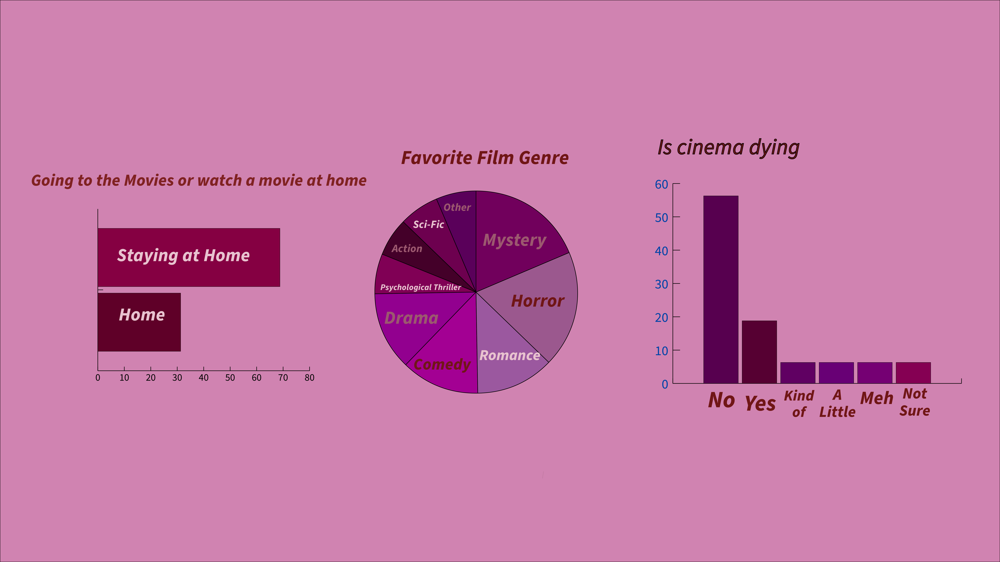

This graphs represents the opinions of fellow film lovers. The film industry is always moving towards a new direction and recently, it seems less and less people are attending actual screenings. While I prefer to watch films at home, there are certains films and genres that are meant to be seen in theaters.
Some memories I hold on to from watching movies in theathers have to be the live reaction of everyone. Seeing Spiderman: No Way Home had to be a prime memory of cinema. Being in a theater full of people who love the franchies. An Avenger: Endgame, having an audience to watch the film with makes it more exiciting. So here in the first graph I asked if people preferes to watch films at home or at the theater, majority said at home. Some reasons could be that they would want to rewatch some movies at home, in the comfort of their homes. New releases are often in theathers hwoever streaming plateforms have taken over the cinema world. The second graph are different genres that people prefer. Now I am more of a romcom person, I do like sci-fic but I prefer to rewatch shows instead of movies, my favorite movies always end sad that sometimes I think it can't live up to how I felt watching it for the first time. But it is obvious that peple prefer mystery and horror.(I don't like scary films) The next graph is the result of what people believe about the industry of cinema. Is it dying? I believe that cinema is dying. Why? Well, because less and less people are going to theaters. Streaming services have been becoming more and more powerful in cinema, people prefering to stay home and watch from these streaming plateforms. because more and more films are streamings in these plateforms, it seems theater audience have grown less. there is a big difference from now compare to years ago. Unless its a big franchies where the films come out in theater, no one reaaly shows up. And over the course of the years, many movie theaters have shut done, many going out of business.